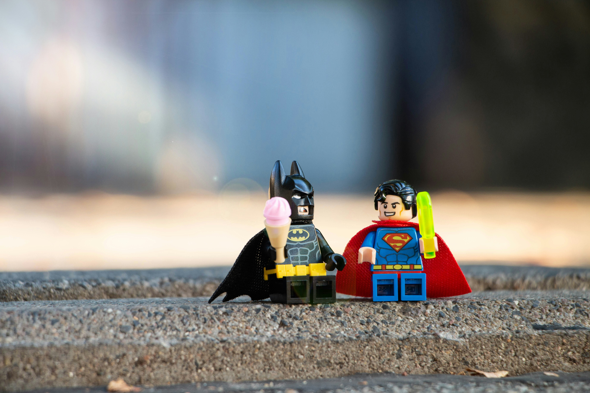

Como seu produto/ serviço chega ao público? Através da comunicação, seja ela boca a boca, rede social, publicação, anúncio. Mas pra salvar o mundo, o super herói precisa de uma identidade, correto? Sem isso, quem saberia quem ele é?
Soluções JN para seu negócio! Transformo uma simples logo em uma marca memorável.
Conheça um pouco do meu trabalho!Soluções JN para seu negócio!
Olá, como vai? Sou o Joe, um profissional que faz o que faz para transformar uma simples logo em uma marca memorável. O que se espera de um simples ícone? Um grande potencial para chegar em pessoas que valorizem e fidelizar o que consomem.
O que os olhos veem, o coração sente!
Como seu produto/ serviço chega ao público? Através da comunicação, seja ela boca a boca, rede social, publicação, anúncio. Mas pra salvar o mundo, o super herói precisa de uma identidade, correto? Sem isso, quem saberia quem ele é?
Um “S” no peito, um morcego desenhado, ou que tal um raio? Confesso que esse pode ter mais de um 😅. Mas Se preferir, podemos também ter uma aranha desenha na sua roupa de super herói. Entende por que ter uma identidade é importante? Não é status, não é fama, é reconhecimento, é valorização, é transformação de uma simples ideia em realidade. É um primeiro passo para a construção da frase: “com grandes poderes, vem grandes responsabilidades!”.
